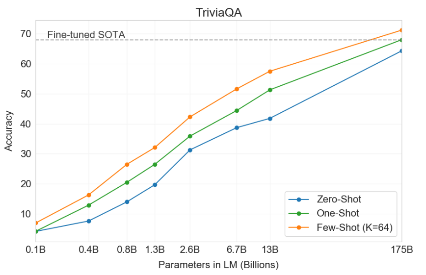
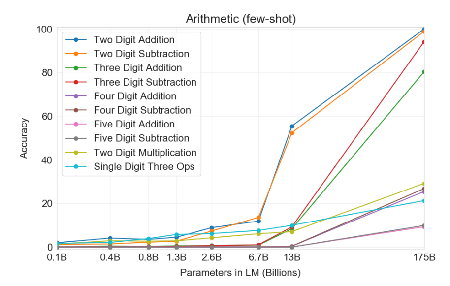

In this lecture, we will explore the capabilities of GPT-3, the canonical large language model. We will closely follow the benchmarks from the GPT-3 paper, which include:
- standard NLP benchmarks (e.g., question answering), as well as
- quirky one-off demos (e.g., using a new word in a sentence).
In comparison with the state-of-the-art-result for each task, the results are mixed:
- On some tasks such as language modeling, GPT-3 exceeds the state-of-the-art by a huge margin.
- On others, where GPT-3 is competing against systems that are trained with large amounts of labeled data, it lags far behind.
The way to think about these results is as follows:
- GPT-3 was not trained on these tasks explicitly; it was just trained as a language model to predict the next word.
- Nonetheless, even without “trying”, GPT-3 does a passable job on average at a broad range of NLP tasks.
- Because GPT-3 was not trained on any of these tasks, it hasn’t overfit, which means it has a good chance of doing well at many many other tasks (as seen by the passable performance on one-off tasks).
- Moreover, if you wanted to do well on any particular task (e.g., question answering), you should in principle be able to adapt GPT-3 using the large amounts of labeled data to exceed state-of-the-art.
Adaptation. Recall that a language model \(p\) is a distribution over sequences of tokens \(x_{1:L}\) and thus can be used to score sequences:
\[p(\nl{the}, \nl{mouse}, \nl{ate}, \nl{the}, \nl{cheese}).\]It can also be used to perform conditional generation of a completion given a prompt:
\[\nl{the mouse ate} \generate{} \nl{the cheese}.\]A task is a mapping from inputs to outputs. For example, for question answering, we might have:
Input: What school did burne hogarth establish?
Output: School of Visual Arts
We use the term adaptation to refer to the process of taking a language model and turning it into a task model, given:
- a natural language description of the task, and
- a set of training instances (input-output pairs).
There are two primary ways to perform adaptation:
- Training (standard supervised learning): train a new model that maps inputs to outputs, either by
- creating a new model that uses the language model as features (probing), or
- starting with the language model and updating it based on the training instances (fine-tuning), or
- something in between (lightweight fine-tuning).
- Prompting (in-context learning): Construct a prompt (a string based on the description and training instances) or a set of prompts, feed those into a language model to obtain completions.
- Zero-shot learning: number of training examples is 0
- One-shot learning: number of training examples is 1
- Few-shot learning: number of training examples is few
Which adaptation procedure should we go with?
- Training can be challenging due to overfitting (just imagine fine-tuning a 175 billion parameter model based on 5 examples). How to do this effectively will be the topic of the adaptation lecture.
- For now, we will be content with adaptation of GPT-3 using prompting. Note that the limitation of prompting is that we can only leverage a only small number of training instances (as many as can fit into a prompt). This is due to a limitation of Transformers, where the prompt and the completion must fit into 2048 tokens.
The GPT-3 paper evaluated GPT-3 on a large set of tasks. We will consider a subset of these, and for each task, discuss the following:
- Definition: What is the task and its motivation?
- Adaptation: How do we reduce the task to language modeling (via prompting)?
- Results: What are the quantitative numbers compared to task-specific state-of-the-art models?
Size and number of examples matters. By default, the results will based on
- the full GPT-3 model (davinci), which has 175 billion parameters
- using in-context learning with as many training instances as you can stuff into the prompt.
Along the way, we will do ablations to see if model size and number of in-context training instances matters. Spoiler: it does and more is better.
The tasks are grouped as follows:
The goals of this lecture is to provide:
- an overview of tasks in NLP (independent of large language models),
- a sense of how well GPT-3 works, and
- a taste for the art of prompt engineering.
Language modeling
The most natural starting point for thinking about what a language model can do is to ask if it can do the thing that language models are supposed to do: model language.
Recall that a language model \(p\) is a probability distribution over sequences of tokens. Suppose we take a corpus of text \(x_{1:L}\), for example:
\[\nl{the mouse ate the cheese}\]We can ask: what is the probability the language model assigns to it?
\[p(\nl{the mouse ate the cheese})\]Recall that we can break down the the joint probability into the product of the conditional probabilities for each token by the chain rule:
\[p(x_{1:L}) = \prod_{i=1}^L p(x_i \mid x_{1:i-1}).\]Perplexity. The joint probability of a sequence depends on its length and thus goes to zero as the length grows, which makes it hard to track. (Just think about trying to get a better estimate of perplexity on newswire by getting more newswire.)
Intuitively we want to average the per token probabilities \(p(x_i \mid x_{1:i-1})\). We don’t want to take the arithmetic average because assigning a token probability 0 is really bad (think about coding: your code length would be infinite), but the arithmetic average doesn’t penalize you for that. Instead, we want the geometric average, which is exactly what perplexity does:
\[\perplexity_p(x_{1:L}) = \exp\left(\frac{1}{L} \sum_{i=1}^L \log \frac{1}{p(x_i \mid x_{1:i-1})}\right).\]Perplexity can be interpreted as the average “branching factor” per token. Recall that \(\log \frac{1}{p(x_i \mid x_{1:i-1})}\) is the code length. We are taking the average code length; exponentiating provides the number of possibilities. For intuition, take uniform distribution: a bitstring of length of 3 can encode \(2^3\) possible strings.
Tale of two errors. There are two types of errors a language model can make, and perplexity treats them asymmetrically:
- Recall error: The language model fails to place probability mass on some token. Perplexity has no mercy:
- Precision error: The language model places extra probability mass on some bad sequences. Perplexity provides a slap on the wrist. Given a language model \(p\), suppose we mix in some garbage distribution \(r\) with probability \(\epsilon\):
Then we can compute the perplexity of \(x_{1:L}\) under \(q\):
\[\perplexity_q(x_{1:L}) \le \frac{1}{1 - \epsilon} \perplexity_p(x_{1:L}) \approxeq (1 + \epsilon) \perplexity_p(x_{1:L}),\]where the last approximate equality holds for small values of \(\epsilon\). If we mix in 5% junk, then perplexity only by 5%. Note that the resulting language is horrible for generation, since every 20 tokens on average it’s just going to generate a gibberish token.
Now let’s get on with evaluating perplexity on an actual dataset.
Penn Tree Bank
The Penn Tree Bank is a classic dataset in NLP, originally annotated for syntactic parsing. Beginning with Emami and Jelinek (2004) and Mikolov and Zweig (2012), a version of the dataset that only contained Wall Street Journal articles was used as a language modeling evaluation. Note that the PTB language modeling benchmark involved some significant preprocessing of the original dataset (h/t to John Hewitt for pointing this out).
Adaptation. Feed the entire text as a prompt into GPT-3 and evaluate the perplexity (demo):
Pierre Vinken, 61 years old, will join the board as a nonexecutive director Nov. 29. Mr. Vinken is chairman of Elsevier N.V., the Dutch publishing group.
Results. GPT-3 vastly outperforms the existing state-of-the-art:
| Model | Perplexity |
| GPT-3 | 20.5 |
| BERT-Large-CAs1 | 31.3 |
See the leaderboard for the latest results.
Train/test leakage. The authors did not evaluate on some datasets such as WikiText-103 because GPT-3 was trained on Wikipedia. PTB had the advance of predating the Internet, and is only available through a paid license. This is another complication with large datasets: it is difficult to check that your test data did not appear in your training data and was memorized.
LAMBADA (Paperno et al. 2016)
- Task: predict the last word of a sentence.
- Motivation: Solving the task requires modeling long-range dependencies.
Adaptation.
- LAMBADA is natively already a language modeling task, so we could just ask a language model to complete the final word of the sentence.
- Problem: language model doesn’t know it should be producing the final word of the sentence.
- Solution: frame it more explicitly as a input-output mapping and use in-context learning with additional examples (demo):
Fill in blank:
Alice was friends with Bob. Alice went to visit her friend ___. -> Bob
She held the torch in front of her.
She caught her breath.
“Chris? There’s a step.”
“What?”
“A step. Cut in the rock. About fifty feet ahead.” She moved faster. They both moved faster. “In fact,” she said, raising the torch higher, “there’s more than a ___. -> step
Results. GPT-3 does much better on this task than the previous state-of-the-art (based on GPT-2):
| Model | Perplexity |
| GPT-3 (few-shot) | 1.92 |
| SOTA | 8.63 |
See the leaderboard for the latest results.
HellaSwag (Zellers et al. 2019)
- Motivation: evaluate a model’s ability to perform commonsense reasoning
- Task: choose the most appropriate completion for a sentence from a list of choices
Adaptation. This is a multiple-choice task, so the most natural thing to do is to score each candidate answer with the language model and predict the “best” one (demo):
Making a cake: Several cake pops are shown on a display. A woman and girl are shown making the cake pops in a kitchen. They ${answer}
where ${answer} is one of:
- bake them, then frost and decorate.
- taste them as they place them on plates.
- put the frosting on the cake as they pan it.
- come out and begin decorating the cake as well.
How do you score a candidate answer \(y\) given a question \(x\)? There’s no principled answer, but here are some heuristics:
Unnormalized probability: \(\text{score}(x, y) = p(x, y)\). The problem with the unnormalized probability is that it has a bias towards short answers (demo).
Length-normalized probability: \(\text{score}(x, y) = \frac{p(x, y)}{\text{num-tokens}(y)}\). This fixes the length bias. However, given two answers of the same length, the model still might prefer the more popular entity.
Frequency-normalized probability: \(\text{score}(x, y) = \frac{p(y \mid x)}{p(y \mid x_0)}\), where \(x_0\) is a neutral string like \(\nl{Answer:}\). This lowers the score for answers that happen to just be common (e.g., \nl{John}). Compare demo versus demo.
Results. GPT-3 got close but did not exceed the state-of-the-art:
| Model | Accuracy |
| SOTA | 85.6 |
| GPT-3 | 79.3 |
However, the SOTA used fine-tuning on the HellaSwag training set, so it is pretty impressive that GPT-3 can get close without any task-specific training data!
See the leaderboard for the latest results.
Question answering
Now we consider (closed-book) question answering, where the input is a question and the output is an answer. The language model has to somehow “know” the answer without looking up information in a database or a set of documents (we’ll consider reading comprehension later, where the information is provided).
Input: What school did burne hogarth establish?
Output: School of Visual Arts
TriviaQA (Joshi et al. 2017)
- Task: given a trivia question, generate the answer
- The original dataset was collected from trivial enthusiasts and was presented as a challenge used for (open book) reading comprehension, but we use it for (closed-book) question answering.
Adaptation. We define a prompt based on the training instances (if any) and the question, and take the completion as the predicted answer (demo):
Q: ‘Nude Descending A Staircase’ is perhaps the most famous painting by which
20th century artist?
A: Marcel Duchamp
Results.
| Model | Accuracy |
| RAG | 68.0 |
| GPT-3 (zero-shot) | 64.3 |
| GPT-3 (few-shot) | 71.2 |
We also see that both increasing the model size and the number of in-context training instances helps:

WebQuestions (Berant et al. 2013)
- Task: answer questions
- Dataset collected from Google search queries, initially created for question answering on knowledge bases
Adaptation.
We define a prompt the same as above (demo):
Q: What school did burne hogarth establish?
A: School of Visual Arts
Results.
| Model | Accuracy |
| RAG | 45.5 |
| GPT-3 (zero-shot) | 14.4 |
| GPT-3 (few-shot) | 41.5 |
NaturalQuestions
- Task: answer questions
- Dataset collected from Google search queries (with long-form answers)
Adaptation. We define a prompt the same as above (demo):
Q: Who played tess on touched by an angel?
A: Delloreese Patricia Early (July 6, 1931 - November 19, 2017), known professionally as Della Reese.
Results.
| Model | Accuracy |
| RAG | 44.5 |
| GPT-3 (zero-shot) | 14.6 |
| GPT-3 (few-shot) | 29.9 |
Translation
- Task: translate a sentence in a source language (e.g., German) to sentence in a target language (e.g., English)
- Machine translation has been a long standing NLP task since the 1960s, and statistical machine translation took off within NLP (with its own distinct subcommunity) in the 2000s, followed by neural machine translation in the mid-2010s. It has always been a data-rich field due to the existence of human translators.
- The standard evaluation dataset is the WMT’14 and WMT’16 datasets.
- Since there are multiple possible translations, the (automatic) evaluation metric is BLEU (which captures a notion of n-gram overlap).
Adaptation. For the few-shot setting, we construct a prompt containing input-output training instances along with the input (demo):
Mein Haus liegt auf dem Hügel. = My house is on the hill.
Keinesfalls dürfen diese für den kommerziellen Gebrauch verwendet werden. = In no case may they be used for commercial purposes.
Results. Here are the results from German to English:
| Model | Accuracy |
| SOTA (supervised) | 40.2 |
| GPT-3 (zero-shot) | 27.2 |
| GPT-3 (few-shot) | 40.6 |
- Even without supervised training data, GPT-3 matches the state-of-the-art of a fully-supervised system!
- This presents a lower bound on how well one can do in machine translation; you would definitely want to leverage the large amount of parallel corpora (aligned input-output pairs).
- Results from French and Romanian are similar.
- Results from English to a foreign language is much worse, which is expected since GPT-3 is primarily an English language model.
Arithmetic
GPT-3 is a language model (primarily on English), but we can evaluate it on a range of more “abstract reasoning” tasks, to evaluate GPT-3 as more of a general-purpose model.
- Task: do arithmetic (2-5 digit addition, subtraction, multiplication)
- There’s no practical reason you would want to solve this task; it’s just a diagnostic task to satisfy our scientific curiosity.
Adaptation. Pose the problem as question answering (demo):
Q: What is 556 plus 497?
A: 1053
Results.

It doesn’t work perfectly and can hardly be said to “understand arithmetic” fully, but it works surprisingly well.
News article generation
- Task: given title and subtitle, generate a news article
- Dataset: title/subtitles taken from newser.com
- Evaluation: humans rated articles based on how likely the article was likely to be written by a machine
Adaptation. Note: in-context learning was needed to give the model an idea of what a prompt looks like.
Title: United Methodists Agree to Historic Split
Subtitle: Those who oppose gay marriage will form their own denomination
Article: After two days of intense debate, the United Methodist Church has agreed to a historic split - one that is expected to end in the creation of a new denomination, one that will be "theologically and socially conservative," according to The Washington Post. The majority of delegates attending the church's annual General Conference in May voted to strengthen a ban on the ordination of LGBTQ clergy and to write new rules that will "discipline" clergy who officiate at same-sex weddings. But those who opposed these measures have a new plan: They say they will form a separate denomination by 2020, calling their church the Christian Methodist denomination...
Results. Humans were able to able to detect classify “human” versus “machine” only 52% of the time (barely above random chance).
For the article above, humans guessed “machine” correctly only 12% of the time.
Novel tasks
Using new words
- Task: given a new made-up word and a definition, generate a sentence that uses the word.
Adaptation. Just describe the task in the prompt (demo):
To “screeg” something is to swing a sword at it. An example of a sentence that uses the word screeg is: We screeged the tree with our swords.
Correcting English grammar
- Task: given an ungrammatical sentence, generate its grammatical version.
Adaptation. The prompt consists of input-output pairs (demo):
Poor English input: I eated the purple berries.
Good English output: I ate the purple berries.
Poor English input: Thank you for picking me as your designer. I’d appreciate it.
Good English output: Thank you for choosing me as your designer. I appreciate it.
Poor English input: The mentioned changes have done. or I did the alteration that you
requested. or I changed things you wanted and did the modifications.
Good English output: The requested changes have been made. or I made the alteration that you
requested. or I changed things you wanted and made the modifications.
Poor English input: I’d be more than happy to work with you in another project.
Good English output: I would be happy to work with you on another project.
Other tasks
Since the original paper, GPT-3 has been applied to many more tasks, including benchmark datasets and one-off demos. Here is an non-exhaustive list.
Benchmarks.
- SWORDS: lexical substitution, where the goal is to predict synonyms in the context of a sentence.
- Massive Multitask Language Understanding: 57 multiple-choice problems spanning mathematics, US history, computer science, law, etc.
- TruthfulQA: question answering dataset that humans would answer falsely due to misconceptions.
The performance on these benchmarks is still mediocre, but it’s perhaps not bad given that we’re doing few-shot learning!
Demos.
The demos are creative and interesting, but it’s hard to tell how reliably they work.
Summary
- GPT-3 was evaluated on a wide range of standard NLP benchmarks and on quirky one-off tasks.
- GPT-3 can perform extremely well or be very medicore.
- Both increasing the size of the model and the number of examples helps performance.
- There are a few heuristic ways of adapting the language model to the task of interest.
- Why does this work? No one knows.
Further reading
- Language Models are Few-Shot Learners. Tom B. Brown, Benjamin Mann, Nick Ryder, Melanie Subbiah, J. Kaplan, Prafulla Dhariwal, Arvind Neelakantan, Pranav Shyam, Girish Sastry, Amanda Askell, Sandhini Agarwal, Ariel Herbert-Voss, Gretchen Krueger, T. Henighan, R. Child, A. Ramesh, Daniel M. Ziegler, Jeff Wu, Clemens Winter, Christopher Hesse, Mark Chen, Eric Sigler, Mateusz Litwin, Scott Gray, Benjamin Chess, Jack Clark, Christopher Berner, Sam McCandlish, Alec Radford, Ilya Sutskever, Dario Amodei. NeurIPS 2020.
- Blog post explaining perplexity